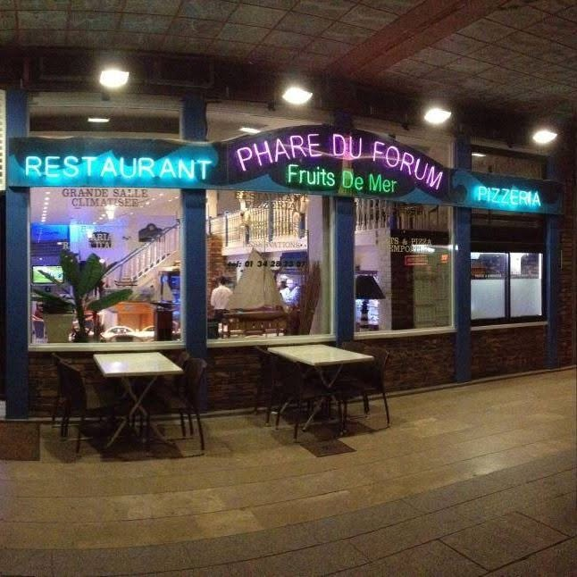
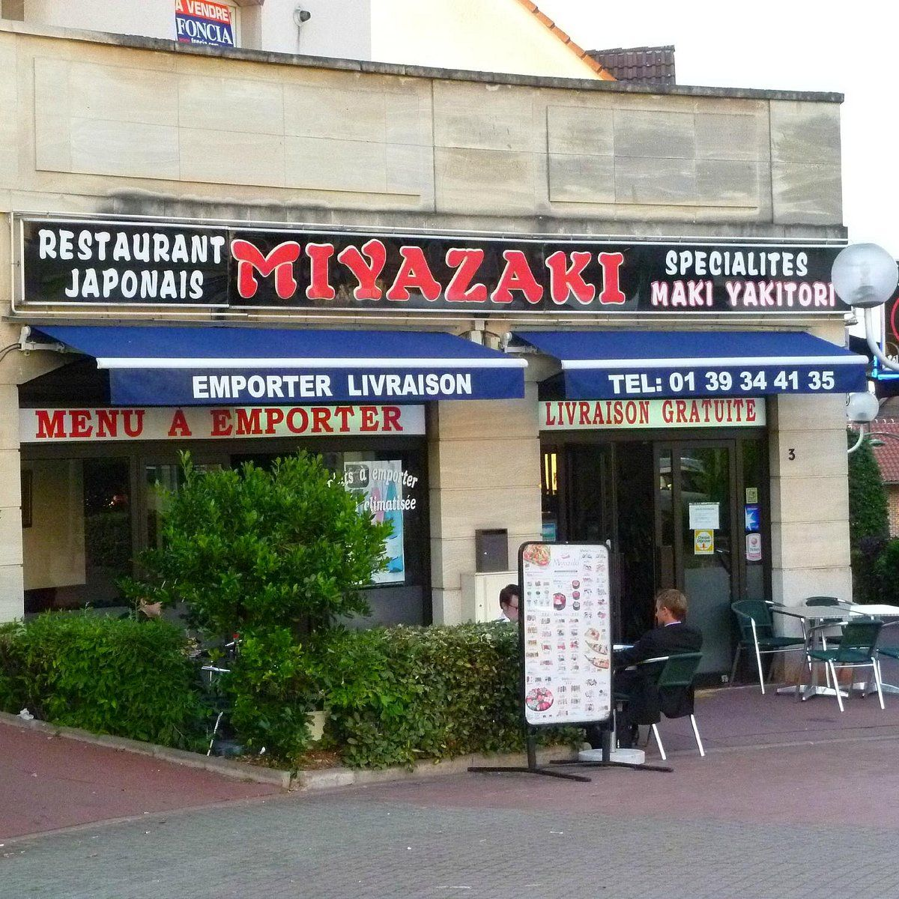
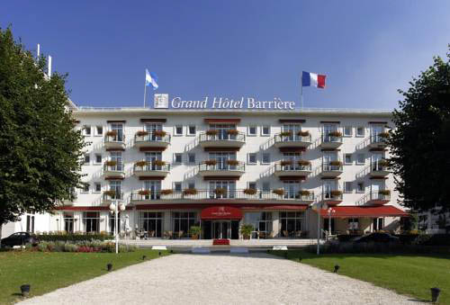
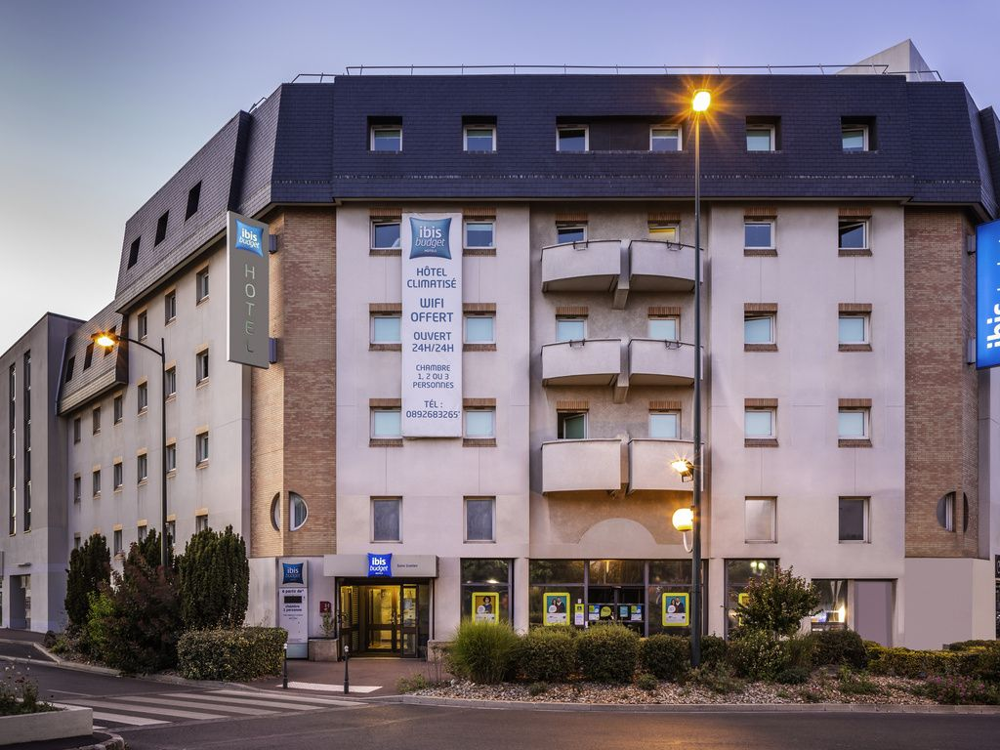
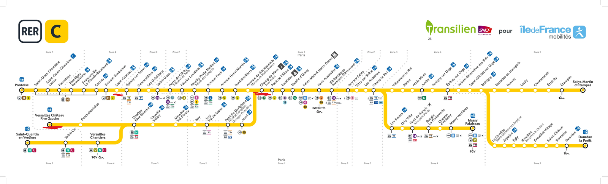

Le Phare
Pizzeria and Italian restaurant.
14 place François truffaut, 95210 Saint-Gratien, France

Pizzeria and Italian restaurant.
14 place François truffaut, 95210 Saint-Gratien, France

Japanese restaurant.
3 Pl. de la Gare, 95210 Saint-Gratien, France

Beautiful hotel with a great location in the heart of Enghien-les-Bains, in front of the casino.

Hotel with a budget-friendly price and good location in the heart of Saint-Gratien.
This line will take you to Paris in 15 minutes. The station is located in the city center of Saint-Gratien. It can also take you to Versailles Castle in 45 minutes.

These bus lines are optimal for moving around the different cities in the area. They allow you to reach train stations that takes you to different parts of Paris.
Saint-Gratien has a variety of educational institutions, including primary schools and secondary schools. The nearest high school is located in Enghien-les-Bains, which is easily accessible by public transportation.
Saint-Gratien has several healthcare facilities, including medical analysis laboratories and pharmacies. The nearest hospital is located in Ermont, which is easily accessible by public transportation.
Saint-Gratien has several sports facilities, including gyms and recreational areas. The nearest sports center is located in the center of the city. Just 15 minutes away from the city center, you can find an archery club, a tennis club, and a swimming pool.
There is a cultural center in Saint-Gratien that hosts various events and exhibitions throughout the year. The conservatory of music is also located in the city center, offering music lessons and performances.